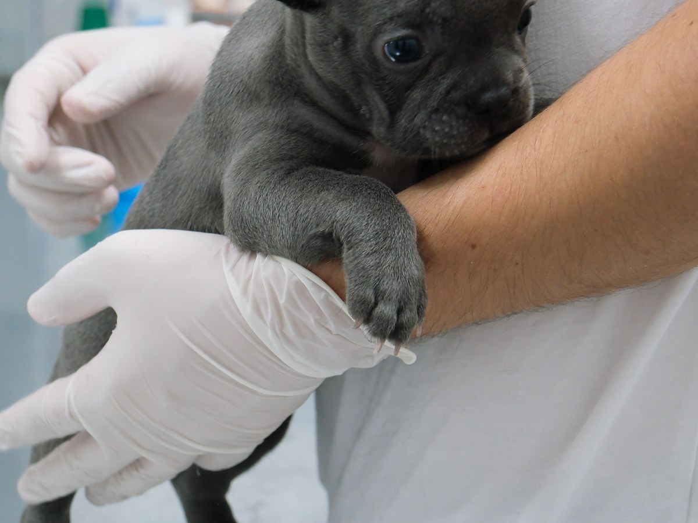
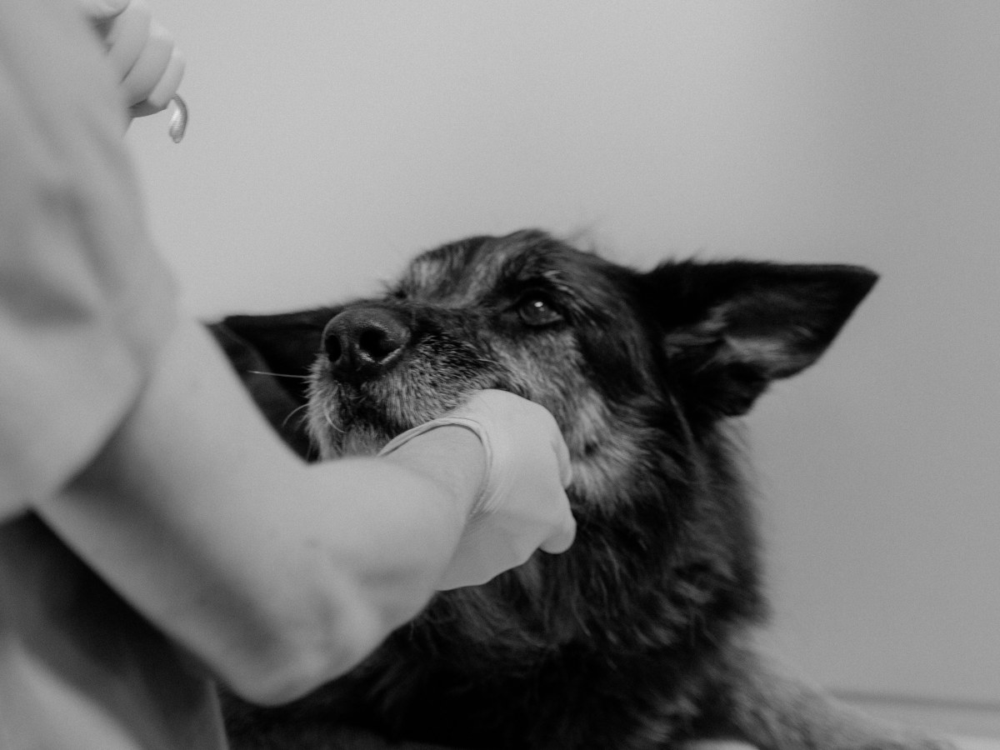
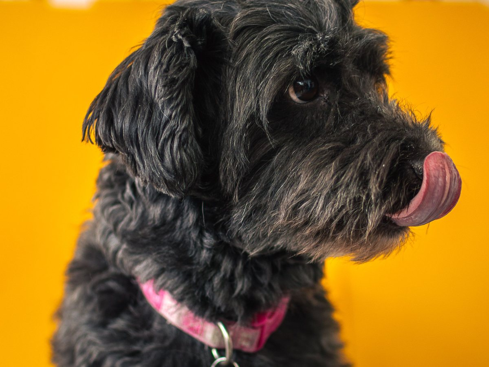
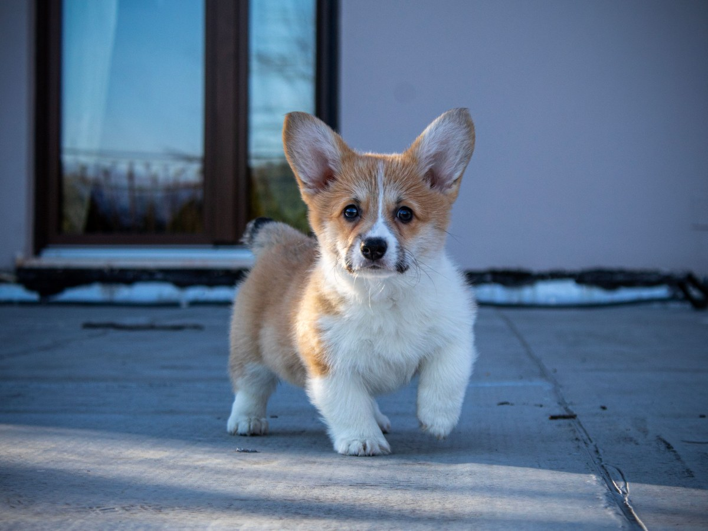
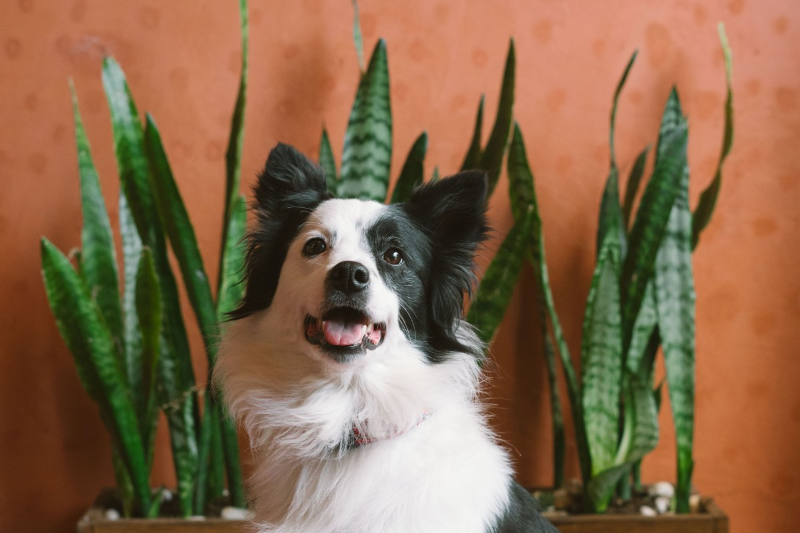
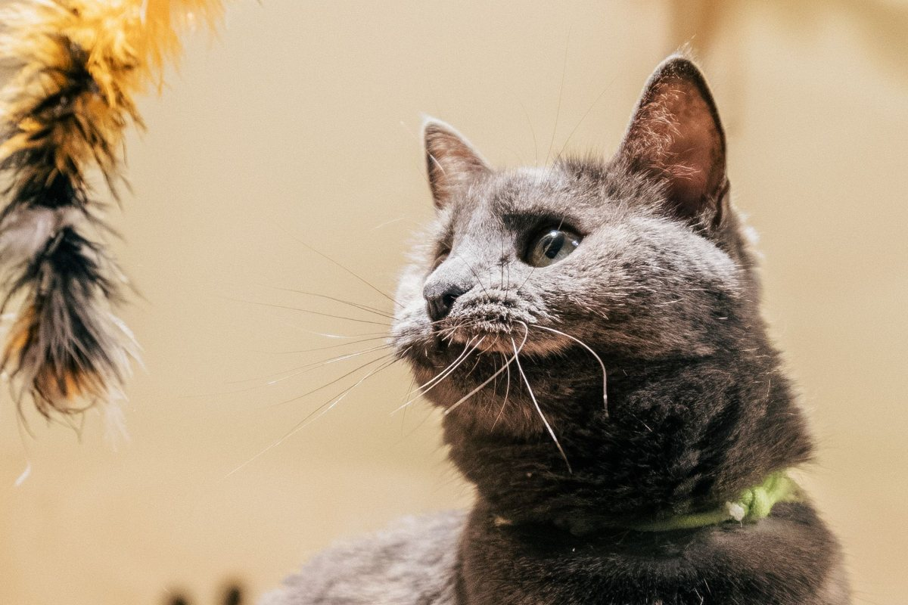
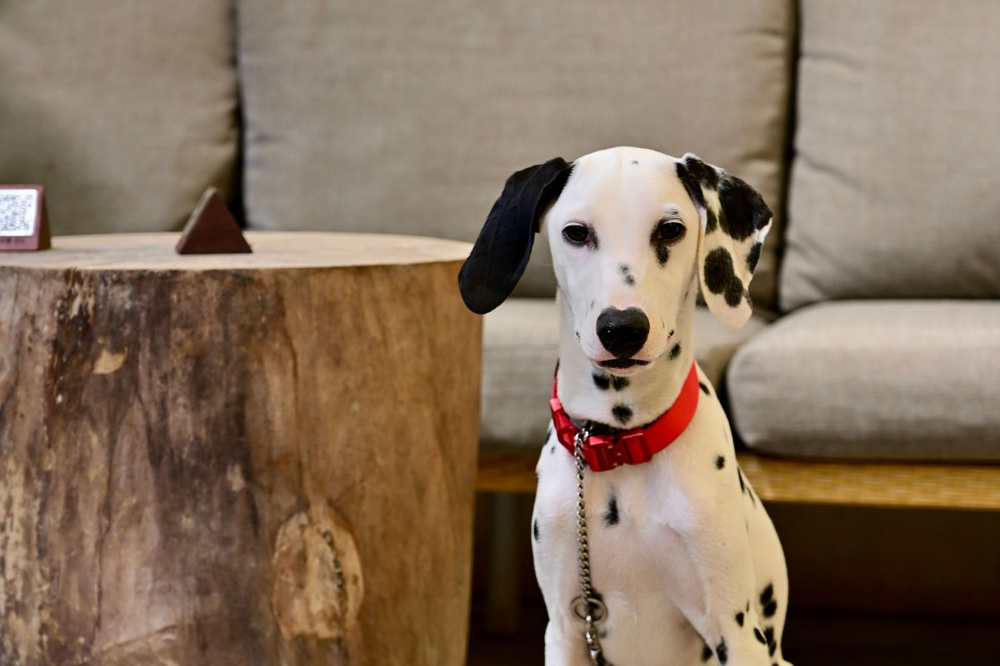
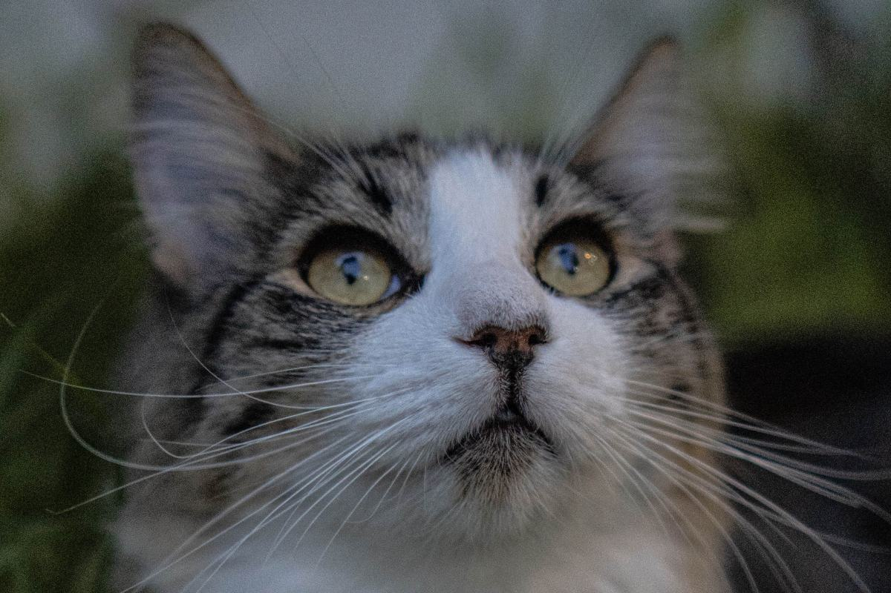
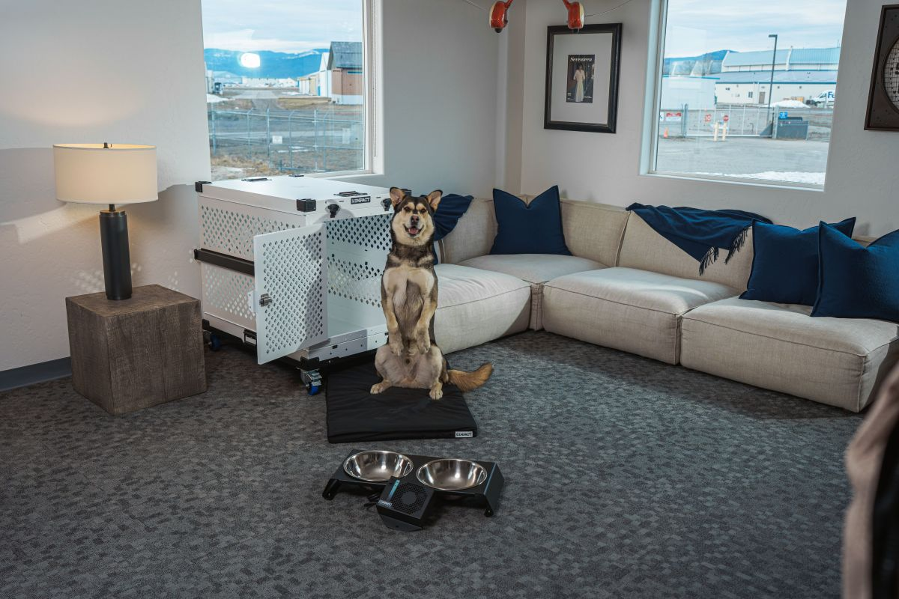
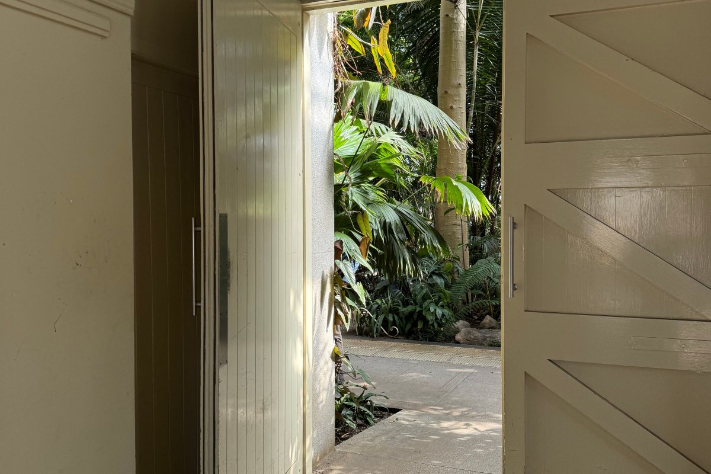

Sede nueva · Av. Concha y Toro 3859
Ahora también en Puente Alto.
Dogtoralia abrió sede nueva: 151 reseñas y un 4,9.
- 2sedes abiertas
- 4,9de promedio en las dos
- 245reseñas entre ambas
- 0webs: ninguna ficha tiene sitio
La sede nueva
¿Dónde están ahora?
- SEDE NUEVA
Av. Concha y Toro 3859
Puente Alto. Lun a vie 10–18, sáb 10–16:30.
- SEDE SANTIAGO
Av. Pdte. Balmaceda 2776
Santiago. Lun a vie 11–19, sáb 10–17.
- SI IBAS A SANTIAGO
Sigue abierta
Las dos fichas atienden.
- PARA AGENDAR
El WhatsApp de tu sede
Cada sede tiene el suyo.
Dos sedes, el mismo 4,9.
En sus reseñas
Qué se atiende
-

En sus reseñas
Cirugías
Hasta casos complejos.
-

En sus reseñas
Consulta
Con diagnósticos claros.
-
En su ficha
Perros y gatos
Los dos aparecen en sus fotos.
-

En sus reseñas
Dudas por WhatsApp
Antes de ir.
-

Por confirmar
Vacunas
Se consulta por WhatsApp.
-
Por confirmar
Exámenes
Se consulta por WhatsApp.
Lo marcado sale de sus reseñas y su ficha; lo demás se confirma con la clínica.
«Personas que le ponen el alma a nuestros peludos».
Una reseña de la sede Puente Alto
Perros y gatos
Los que ya los conocen






Fotos de referencia: ninguna es de la clínica.
Cómo llegar
Av. Concha y Toro 3859, Puente Alto
- +56 9 5783 0195
- Lun a vie
- 10:00–18:00
- Sábado
- 10:00–16:30
- Domingo
- Cerrado
La sede de Santiago sigue en Av. Pdte. Balmaceda 2776, con su propio WhatsApp: +56 9 2749 2520.
Concha y Toro 3859 Abrir en Google Maps
Para Dogtoralia
Qué es real y qué falta
Lo verificado
Las dos sedes con sus direcciones, WhatsApp y horarios, y las reseñas.
Lo de ejemplo
Los servicios por confirmar, las fotos y el esquema de las sedes.
Lo que falta
Una web con la dirección nueva: hoy quien la busca sólo encuentra dos fichas sueltas, y dogtoralia.com está estacionado.